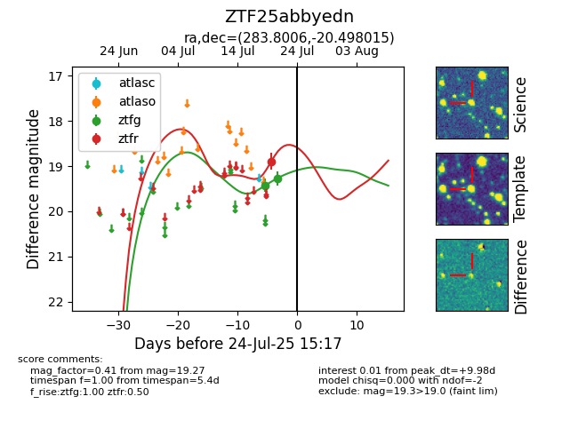

Target ZTF25abbyedn at 2025-08-05 23:02, see:
FINK: fink-portal.org/ZTF25abbyedn
Lasair: lasair-ztf.lsst.ac.uk/objects/ZTF25abbyedn
ALeRCE: alerce.online/object/ZTF25abbyedn
alt names
ZTF25abbyedn (ztf,fink)
coordinates:
equatorial (ra, dec) = (283.8006,-20.49801)
galactic (l, b) = (14.9137,-9.98363)
photometry
last ztfg=19.27, ztfr=18.89
2 ztfg, 1 ztfr detections
